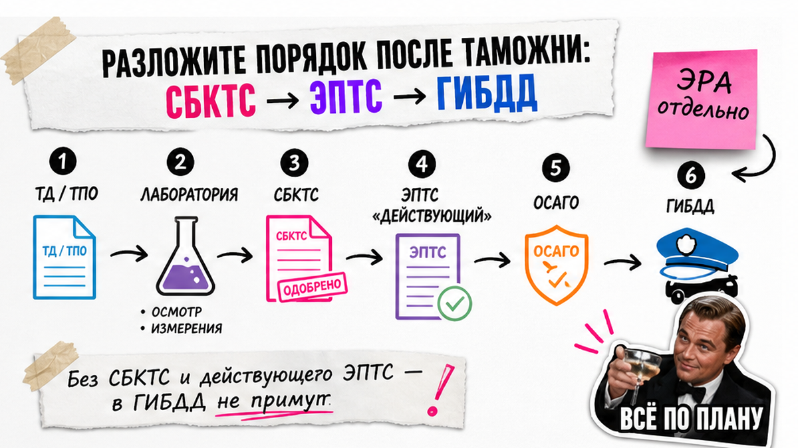
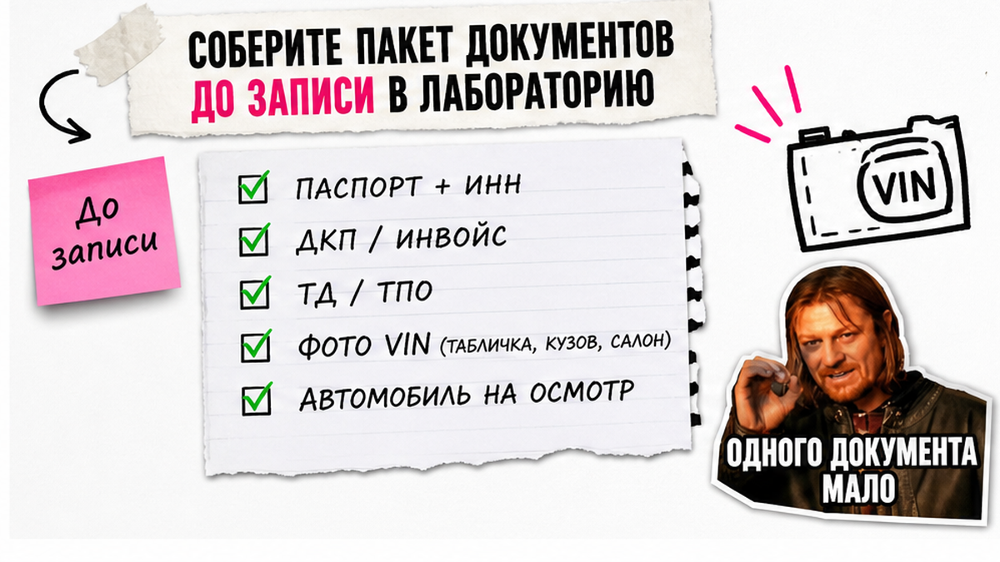
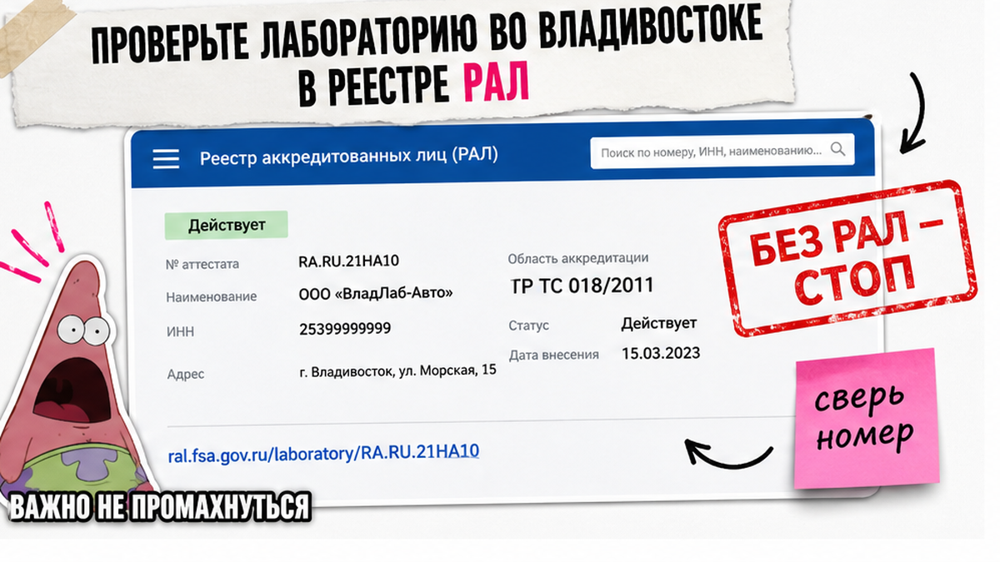

Машина уже вышла с таможни, а дальше - стена из аббревиатур: СБКТС, ЭПТС, СЭП, ОТТС. Страшно переплатить посреднику "по фото" и застрять с ЭПТС в статусе "Незавершённый", когда в ГИБДД разворачивают. Ниже - спокойный порядок после выпуска: пакет документов, проверка лаборатории в реестре, очный осмотр, статус "Действующий" на elpts и только потом учёт. Сегодня соберёте чек-лист и откроете нужные порталы сами.
Коротко по цепочке: После таможни цепочка жёсткая: выпуск ТД/ТПО → аккредитованная лаборатория → СБКТС → ЭПТС → статус "Действующий" → ОСАГО → ГИБДД. СБКТС на единичный ввоз делают с представлением авто в лабораторию, а не "по фото". Лабораторию сверяйте в реестре Росаккредитации (РАЛ). ЭРА-ГЛОНАСС - отдельный этап, не дубль этого гайда.
На практике история часто начинается так: Сергей из Новосибирска купил праворульную Toyota во Владивостоке "под ключ". Таможню закрыли, а посредник взял предоплату и обещал СБКТС без осмотра. Через неделю ЭПТС завис в "Незавершённый", в ГИБДД развернули - лаборатории не было в действующем реестре. Чтобы не повторить это, держитесь очереди шагов ниже.
Тут важный момент: в гайдах 2026 года встречаются два совета. Одни пишут, что СБКТС оформляют "по документам без приезда авто". Другие - и позиция по ГОСТ 33670-2015 - требуют представить единичное ТС в аккредитованную лабораторию. Для новичка это критично: "бумажка по фото" от неаккредитованного посредника = риск отказа в ГИБДД.

СБКТС - свидетельство о безопасности конструкции ТС: подтверждение, что именно ваш экземпляр соответствует ТР ТС 018/2011. ЭПТС - электронный паспорт, цифровой аналог привычного ПТС. Без СБКТС или ОТТС на единичный ввоз ЭПТС обычно не оформить.
Схема после выпуска:
Таможня закрыта (ТД/ТПО) → Авто в аккредитованную ИЛ → СБКТС → ЭПТС → статус "Действующий" в СЭП → ОСАГО → ГИБДД
ЭРА-ГЛОНАСС - отдельный чек по LIVE-гайду
| Документ | На что выдают | Кому обычно нужен | Связь с ЭПТС |
|---|---|---|---|
| СБКТС | Единичный экземпляр авто | Физлицо при ввозе JP/KR/CN | Без него ЭПТС на единичный ввоз обычно не сделать |
| ОТТС | Тип / серия модели | Производитель, партия, дилерский поток | Заменяет СБКТС, если тип уже сертифицирован |
| ЭПТС | Электронный паспорт ТС | Всем для учёта и ОСАГО | В ГИБДД пускает только статус "Действующий" |
Сделайте шаги строго по цепочке. Не делайте прыжок в ГИБДД раньше статуса и не надейтесь на оформление "без машины".

До звонка в испытательную лабораторию (ИЛ) соберите пакет. Перечень Росаккредитации включает заявку, паспорт, документы на право владения ТС и техописание по приложению 17 к ТР ТС 018/2011. На практике добавляют таможенные бумаги и фото VIN.
Для Японии заранее заложите вопрос по светотехнике правого руля: фары под левостороннее движение - частый стоп. Типичная ошибка - идти без читаемого VIN. Если выпуск ещё не закрыт, сначала выбор таможни и растаможка из Китая.
Сделайте пакет и фото до предоплаты. Не делайте ставку на то, что "на месте всё дорисуют".

РАЛ - реестр аккредитованных лиц Росаккредитации. На пальцах: официальный список, кто имеет право проводить испытания. Перед предоплатой откройте pub.fsa.gov.ru/ral, найдите организацию и сохраните номер записи. Нужны статус "Действует" и область по ТР ТС 018/2011.
Во Владивостоке называют площадки вроде Академтест и ЦАТ - адреса меняются, ориентир один: сверка в РАЛ. Например, фраза "оформим СБКТС за день только по фото" - красный флаг. В 2025-2026 на Drom обсуждали отзыв аккредитаций и аннулирование "бумажных" СБКТС по светотехнике правого руля.
Ориентиры 2026 года (не калькулятор): СБКТС часто 14-35 тыс. ₽, во Владивостоке чаще ближе к нижней границе; срок нередко 1-5 рабочих дней. Госпошлина оператору СЭП за ЭПТС - 600 ₽, услуги уполномоченной организации отдельно. Смету просите в ИЛ до осмотра. Лоты и расчёт под VIN - в каталоге avto-sales125.ru.
Сделайте запись номера аккредитации из РАЛ. Не делайте предоплату посреднику без записи в реестре и без даты очного осмотра.
После выдачи СБКТС сверьте номер документа и VIN. Уточните, кто оформляет ЭПТС. "Экран успеха" - не PDF, а статус в системе электронных паспортов (СЭП).
Типичная ошибка - ехать в ГИБДД со статусом "Незавершённый". В реальном проекте ввоза критерий простой: пока нет "Действующий", запись на учёт рано.
Проверьте и сохраните скрин статуса "Действующий" до поездки. Не делайте запись в ГИБДД, пока СЭП не обновился.
ЭРА-ГЛОНАСС - система экстренного реагирования при авариях. Её часто путают со СБКТС, хотя это другой слой. Полный гайд не дублируем: место ЭРА - отдельный чек.
Для физлиц в обзорах 2026 года фигурирует отсрочка по проверке УВЭОС до 31.12.2027 - правила меняются, сверяйте актуальность. Практический шаг: откройте нужна ли ЭРА-ГЛОНАСС при ввозе в 2026 и отметьте свой сценарий. Не смешивайте кнопку и получение СБКТС в одном абзаце-инструкции.
Сделайте ЭРА отдельным пунктом со ссылкой на LIVE-гайд. Не делайте: откладывать лабораторию "пока не разберёмся с кнопкой", если выпуск уже закрыт.
Критерий результата: заполнен чеклист, в РАЛ сохранён номер лаборатории со статусом "Действует", на elpts.ru статус ЭПТС = "Действующий" (ваш экран успеха), ЭРА отмечена как отдельный этап. После этого оформите ОСАГО и езжайте в ГИБДД.
Сделайте чеклист до звонка в ИЛ. Не делайте оплату "ускорения", пока список не зелёный. После этого вы сможете идти в ОСАГО и ГИБДД без сюрпризов.
Ближайшие шаги:
Закрыть таможню → Собрать пакет → Сверить ИЛ в РАЛ → Очный осмотр и СБКТС → ЭПТС "Действующий" → ОСАГО → ГИБДД
Хаб Авто-Сейлс - Владивосток, Днепровская 40а, стр. 4. Актуальные лоты смотрите в каталоге, детали по документам после таможни - в Telegram @avtosales125. Форм на странице блога нет.
Материал проверен: редакция Авто-Сейлс (эксперты по авто под заказ из Японии, Кореи и Китая).
Достоверность: факты сверены с перечнем Росаккредитации для СБКТС, ГОСТ 33670-2015, реестром РАЛ (pub.fsa.gov.ru/ral), порталом СЭП elpts.ru, инструкцией elpts-info и практикой ввоза во Владивостоке; расчёты под VIN - в каталоге.
Ориентир 2026 года: СБКТС часто 14-35 тыс. ₽, во Владивостоке нередко ближе к нижней границе. Госпошлина оператору СЭП за ЭПТС - 600 ₽, услуги уполномоченной организации отдельно. Точную смету запросите в ИЛ до осмотра.
На единичный ввоз физлицом - обычно нет. Нужен СБКТС на ваш экземпляр или ОТТС на тип. Сначала лаборатория и СБКТС, потом ЭПТС. В ГИБДД - только со статусом "Действующий".
СБКТС выдают на один конкретный автомобиль. ОТТС - на тип или серию модели. При заказе из Японии, Кореи и Китая физлицу почти всегда нужен СБКТС. Спросите лабораторию: есть ли действующий ОТТС или идём по единичному.
Да. Авто нужно представить в аккредитованную лабораторию на осмотр. Обещание оформить СБКТС "только по фото" для единичного ввоза - красный флаг.
Проверьте VIN на elpts.ru и в личном кабинете СЭП через Госуслуги. Часто ждут передачу данных об утильсборе - ориентир до 31 дня. Не ездите в ГИБДД раньше. При долгом зависании оформитель подаёт заявку в техподдержку СЭП.
Откройте pub.fsa.gov.ru/ral, убедитесь в статусе "Действует" и области по ТР ТС 018/2011. Сохраните номер аккредитации до предоплаты. Нет записи в РАЛ - не платите.